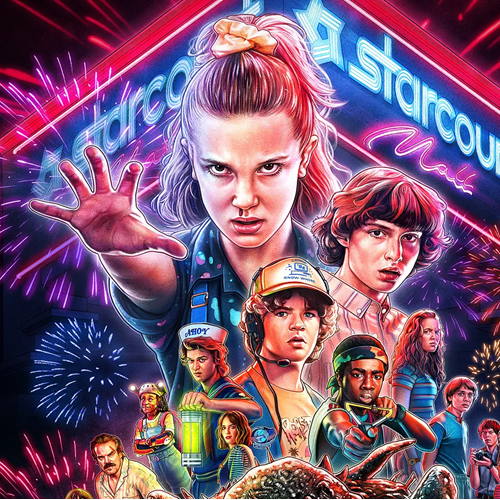
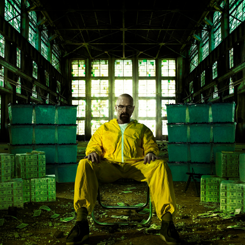
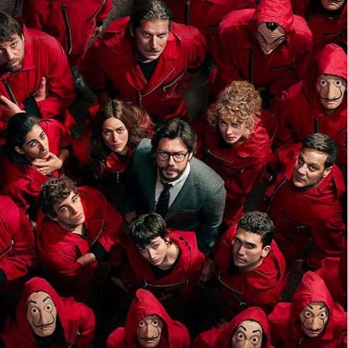
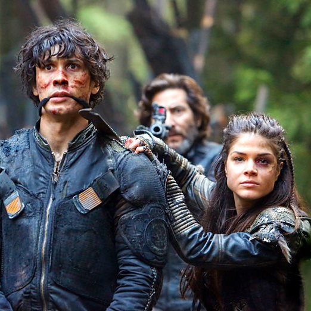
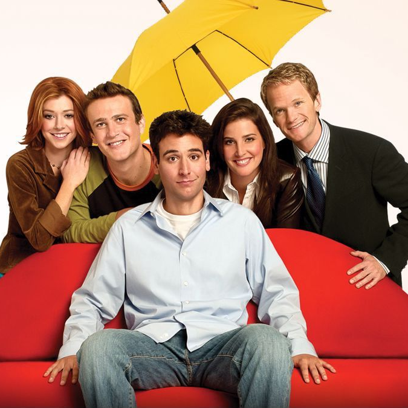

VOTRE BOUSSOULE DANS L'UNIVERS DU CINÉMA
À propos de nous
CinémaRadar est un site web dédié aux amateurs de cinéma et de séries, offrant des informations détaillées sur les films, les acteurs et les critiques. Les utilisateurs peuvent explorer des bases de données complètes, consulter des critiques professionnelles et des avis de la communauté, et découvrir des recommandations personnalisées. Avec une interface conviviale, CinémaRadar facilite la recherche de films et de séries, ainsi que le suivi des dernières sorties et des tendances du divertissement.
Top 5
Sur CinémaRadar, les top 5 films sont élaborés en se basant sur une combinaison de critères tels que les évaluations des utilisateurs, les critiques des experts, et les tendances actuelles. Les listes, basés sur la popularité, sont mises à jour régulièrement pour refléter les nouveautés et les changements dans les préférences des spectateurs. Chaque top 5 est accompagné de bande annonces, pour aider les utilisateurs à découvrir les films les plus appréciés et les plus pertinents.
Meilleurs films de l'année
Tableau de 4 colones et 5 rangs qui illustrent les top 5 films en ordre avec une bande-annonce et une date de sortie. Les films sont en ordre du plus populaire au moins populaire
| Titre | Date de sortie | Rang | Bande annonce |
|---|---|---|---|
| Beetlejuice Beetlejuice | 6 septembre 2024 | 1 | |
| The Deliverance | 16 août 2024 | 2 | |
| Alien: Romulus | 16 août 2024 | 3 | |
| Deadpool & Wolverine | 26 juillet 2024 | 4 | |
| Trap | 2 août 2024 | 5 |
LES RÉCENTES SÉRIES
-

Stranger Things
Des enfants dans une petite ville des années 80 cherchent leur ami disparu et découvrent un monde parallèle. Ils rencontrent Eleven, une fille aux pouvoirs spéciaux, et affrontent des créatures terrifiantes. Ensemble, ils luttent contre des dangers surnaturels et des complots gouvernementaux.
-

Breaking Bad
Un professeur de chimie devenu fabricant de méthamphétamine, Walter White, se lance dans le trafic de drogue pour sécuriser l'avenir financier de sa famille après un diagnostic de cancer. Avec l'aide de son ancien élève Jesse Pinkman, il entre dans un monde dangereux de criminalité. La série explore sa transformation de citoyen respectueux de la loi en un redoutable baron de la drogue.
-

La Casa De Papel
Un groupe de criminels, dirigé par un personnage mystérieux appelé le Professeur, planifie et exécute des braquages audacieux sur la Monnaie royale d'Espagne et la Banque d'Espagne. Ils prennent en otage les employés et les visiteurs pour imprimer des millions d'euros, tout en manipulant les forces de l'ordre et les médias. La série mêle tension, drame et romance, révélant des secrets personnels et des alliances imprévues au cours de ces opérations complexes.
-
Better Call Saul
Better Call Saul suit l'évolution de Jimmy McGill, un avocat au passé trouble, qui se transforme progressivement en Saul Goodman, l'avocat véreux de Breaking Bad. La série explore ses relations compliquées avec son frère Chuck, son ambition professionnelle, et ses efforts pour se faire un nom dans le monde du droit. Tout en dépeignant sa lutte morale et ses choix douteux, elle montre comment il se retrouve impliqué dans le milieu criminel.
-

The 100
Après une apocalypse nucléaire, 100 jeunes délinquants sont envoyés sur Terre depuis une station spatiale pour vérifier si la planète est habitable. Ils découvrent un monde dangereux peuplé de survivants et de créatures hostiles. La série suit leur lutte pour survivre et s'adapter à ce nouvel environnement.
-

How I Met Your Mother
How I Met Your Mother raconte les aventures de Ted Mosby à New York et ses relations avec ses amis Marshall, Lily, Barney et Robin, tout en dévoilant progressivement l'histoire de comment il a rencontré la mère de ses enfants. La série mélange humour, romance et drame.